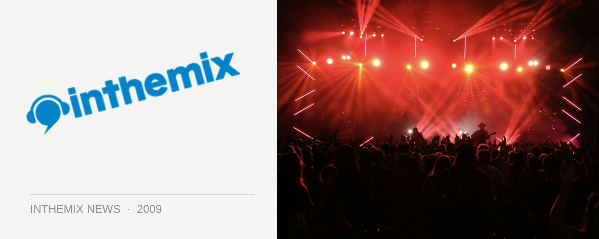

2manyDJs and Proxy locked for Killer's NYE gig
Whenever a major Fuzzy festival is in town, you can be sure there’s gonna be a Killer club gig to accompany it and New Years Eve isn’t going to be any different. While Melbourne may miss out on the Field Day and Summafieldayze events that are staged in the eastern states, you’ve got a massive NYE lineup in the form of 2manyDJs and Proxy who will be helping you party into the new year.
Want a Killer NYE? Catch it at The Palace on Thursday 31st December in Melbourne, tickets on sale Thursday 5th November.